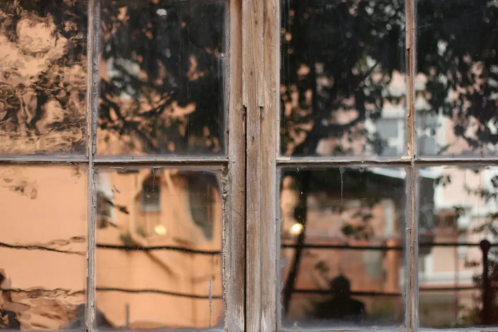
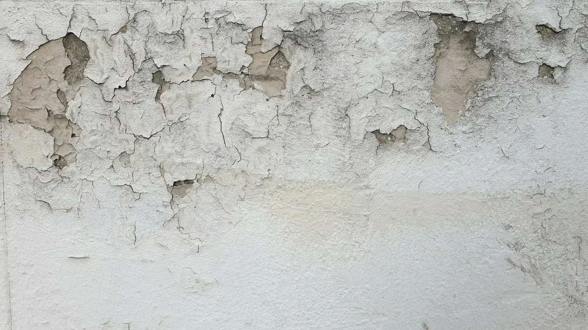
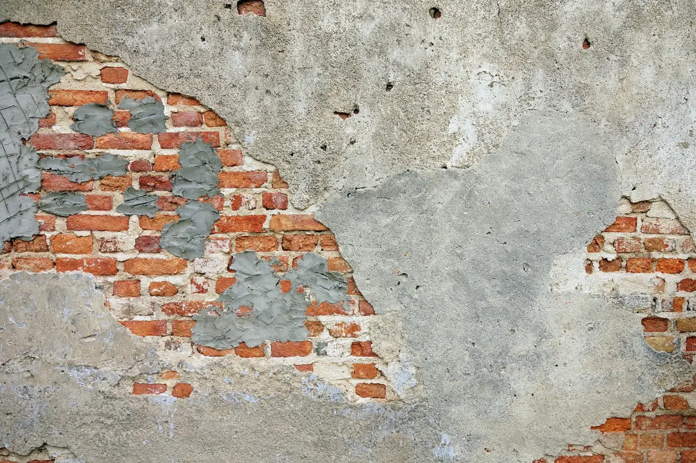

Thermografie, Feuchteschutz und Schimmel
Wärmebildaufnahmen machen Wärmeverluste sichtbar, die mit anderen Messmethoden kaum zu erfassen sind. Und wo feuchte Luft auf kalte Oberflächen trifft, entsteht Schimmel. Wir finden die Ursachen, erstellen Gutachten und planen die Maßnahmen.



Thermografie: Wärmeverluste sichtbar machen
Mit Wärmebildaufnahmen im Infrarotbereich werden Wärmebrücken, Undichtigkeiten in der Gebäudehülle und schlecht gedämmte Bauteile sichtbar. Die Aufnahmen entstehen mit einer speziellen Kamera von den Außenseiten des Gebäudes, sinnvollerweise im Winter, wenn der Temperaturunterschied zwischen innen und außen am größten ist.
Im Anschluss lassen sich die Ursachen der Energieverluste genau analysieren und Maßnahmen zielsicher planen. Innen hilft die Thermografie, Ursachen für Schimmel zu erkennen oder gefährdete Stellen vorbeugend zu finden: Raumecken, alte Kamine, Fensterlaibungen, ungedämmte Außenwände, besonders in Bädern und Küchen.

Wann wird es an der Wand nass?
Schimmel entsteht, wo feuchte Luft auf kühle Oberflächen trifft. Ab etwa 80 % relativer Feuchte an der Oberfläche wächst er, bei 100 % fällt Tauwasser aus. Wählen Sie Raumtemperatur und Luftfeuchte, der Rechner zeigt den Taupunkt und die kritische Oberflächentemperatur.
Raumtemperatur
Relative Luftfeuchte
Berechnung nach der Magnus-Formel; Richtwerte, kein Ersatz für eine Messung vor Ort.
Eine Fensterlaibung mit 13 °C Oberflächentemperatur liegt unter der Schimmelgrenze: hier wächst Schimmel, auch ohne sichtbares Tauwasser.
Feuchteschäden: Nässe ist der größte Feind des Hauses.
Sind Bauteile dauerhaft feucht, entsteht nicht nur Schimmel, auch die Bausubstanz leidet: faulende Holzbalken im Dach und in Holzbalkendecken, Holzfensterrahmen, und selbst Mauersteine, Mörtel und Stahlbeton können ihre Tragfähigkeit verlieren. Feuchte Wände verlieren mehr Wärme, feuchte Dämmung verliert ihre Wirkung. Hausschwamm und Holzfäule zerstören organische Bausubstanz.
Die Ursachen sind vielfältig: Undichtigkeiten in der Dachhaut, aufsteigende Feuchte in erdberührenden Wänden, beschädigte Regenrohre im Erdreich, tropfende Wasser- und Heizungsleitungen (vor allem, wenn die Heizung immer wieder nachgefüllt wird).
Auch Putze und Anstriche werden mit der Zeit wasserdurchlässig, durch Risse oder weil der Anstrich seine abweisende Wirkung verloren hat. Dann dringt in regenreichen Monaten bei schlagregenbeanspruchten Wänden Wasser ein, das vor dem Winter nicht mehr verdunstet. Feuchte Wände und Schimmel entstehen dann an Stellen, an denen es jahrelang keine Probleme gab, besonders hinter Schränken und an Fensterlaibungen.
Wohnungsschimmel
Schimmelpilze wachsen, wenn genug Feuchte da ist und organisches Material (Tapetenkleister, Dispersionsfarben) als Nährboden dient. Ein hoher pH-Wert hemmt das Wachstum. Kritisch wird es, wenn die Luftfeuchte über mehrere Tage bei 70 bis 80 % liegt: An den kältesten Stellen kondensiert Wasserdampf. Im günstigen Fall an der Fensterscheibe, im ungünstigen hinter Fußleisten, Wandverkleidungen und Möbeln an Außenwänden, wo Schimmel lange unentdeckt wächst.
Feuchte kann auch im Bauteilinneren kondensieren, an Hohlräumen und Grenzschichten zu Dämmungen, und dort Dämmschichten in Dächern und Wänden durchfeuchten. Manchmal genügt eine Einzelraum-Lüftungsanlage und die Sanierung der betroffenen Bauteile; bei älteren Gebäuden kann eine Innendämmung einzelner Räume sinnvoll sein, nach vorheriger thermografischer Analyse.
Gutachten, das Ursachen klärt.
Gerade nach einzeln ausgeführten Maßnahmen wie einem Fenstertausch tritt Schimmel auf, wenn nicht alle Einflussfaktoren betrachtet wurden. Ein fachlich fundiertes Gutachten hilft bei der Ursachenanalyse und auch dann, wenn Handwerksfirmen die Verantwortung für die Schimmelbildung nicht übernehmen wollen.
Ratgeber: Schimmel nach FenstertauschFeuchte oder Schimmel im Haus?
Beschreiben Sie uns, wo und seit wann. Wir kommen vorbei, messen und klären die Ursache.